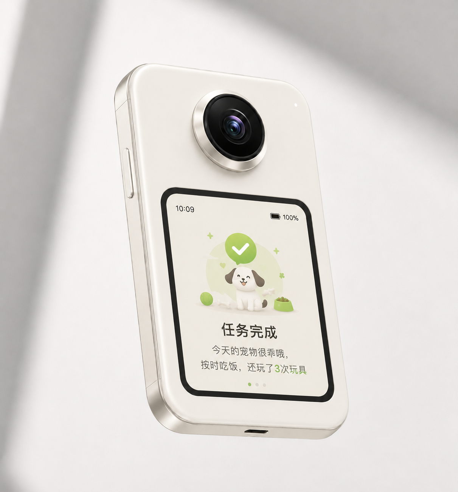

1
软件能力被压缩
AI coding agent 让常规功能、垂类工具和轻量 App 更容易被生成、复制和重组。
单纯做手机 App，很容易陷入既有生态位：入口被手机系统和大厂占据，交互被屏幕和点击路径限制，场景依赖用户主动打开和操作。
AI coding agent 让常规功能、垂类工具和轻量 App 更容易被生成、复制和重组。
用户不再必须打开 App 找功能，而是通过一句话、习惯或上下文触发，让 AI 直接完成任务。
手机入口被系统和大厂占据，单点 App 很容易被通用 Agent 或平台能力吸收。
所以真正的问题是：AI 如果要进入现实世界，它需要什么样的新硬件生态位？
Watcher 要回答的不是“如何再做一个 AI App”，而是 AI 如何通过现实世界入口、长期感知和软硬件结合，形成区别于手机 App 的新生态位。
这是产品定位的战略起点：从功能竞争，转向场景入口、长期上下文和服务闭环的竞争。手机摄像头是临时、手持、由用户主动调用的影像入口；AI 的眼睛应该长期在场、稳定观察、理解空间变化，并结合声音、画面和历史上下文形成判断与反馈。
双摄 + AI 不是为了多一个摄像头，而是为了让 AI 获得更接近现实感知的输入结构。
通过双摄 / 多模态感知、长时视频理解、实时互动、专家式分析和长期记忆，验证 AI 如何从屏幕内的软件助手，变成现实世界中持续在场的理解者与服务者。
Watcher 讲的不是一个设备品类，而是 AI 进入现实世界的方式：通过稳定、多视角、多模态的感知结构，让 AI 理解人的状态、行为和场景上下文。
感知不是终点。Watcher 要验证的是，AI 能否把“看见”进一步转化为提醒、分析、建议、复盘和辅助决策。

AI 健身和双视角视频分析是同一个假设的两个验证场景：多视角现实感知，能否让 AI 更准确理解人，并提供更个性化的服务。

正面视角看动作幅度、左右平衡和姿态展开；侧面视角看脊柱角度、膝盖轨迹和重心变化。

一个视角看用户行为，另一个视角看环境、物品、空间变化或事件结果，最终服务于复盘、总结和建议。
Watcher 不先做一个封闭硬件，也不止步于纯软件 App。软件用于降低体验门槛、教育用户、验证场景；硬件用于提供稳定视角、多视角数据、长期在场和更强的场景绑定。
让用户先体验 AI 视觉感知能做什么，降低理解成本和尝试成本。
用轻量体验验证用户兴趣、基础场景和 AI 感知的可用性。
当用户需要更多角度、更少盲区和更稳定现场感知时，硬件升级变得自然。
用多视角、长期在场和软硬件协同，承接更复杂的个性化需求。
以下图片作为外观、交互和使用方式的辅助展示；页面核心叙事仍以“AI 的眼睛”和“主动服务”为准。


它讲的不是一个设备品类，而是 AI 进入现实世界的方式。
通过双摄与多模态感知、长时视频理解、实时互动、专家式分析和长期记忆，Watcher 验证 AI 如何从屏幕内的软件助手，变成现实世界中持续在场、理解场景并主动服务用户的系统。